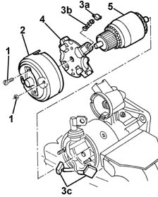
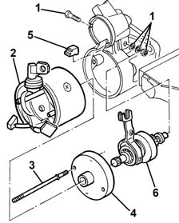
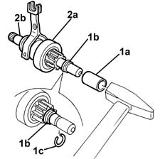
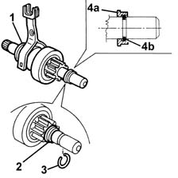
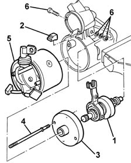
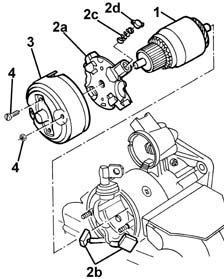

5520B14 starter motor - dismantle and rebuild at bench - wash, check and replace components if necessary
- Path
- Procedures > 55 ELECTRICAL EQUIPMENT > 5520 ENGINE STARTING > 5520B starter motor and components > 5520B14 starter motor - dismantle and rebuild at bench - wash, check and replace components if necessary
- Kind
- repair procedure (removal / refitting; the operation number is the code)
- Applies to
- all engines; all production periods
- Interactive page
- https://sloeber94.github.io/elrnDB-fMltpl/en/#/2891898
Applies to: all engines; all production periods
 Removing
Removing
 Refitting
Refitting5520B18 starter motor solenoids - r+r with motor removed
1. Undo the nuts and bolts fixing the cover.
2. Remove the cover.
3. Rotate and extract the retainers (3a), the springs (3b) and the brushes (3c).
4. Remove the brush holder plate.
5. Remove the rotor.

Applies to: all engines; all production periods
1. Undo and extract the bolt.
2. Extract the stator.
3. Undo the stud bolts.
4. Remove the reduction gear.
5. Remove the rubber plug.
6. Remove the coupling.

Applies to: all engines; all production periods
1. With the aid of a suitable bush (1a), slide the retaining ring (1b) and release the circlip (1c), then extract the retaining ring (1b) from the shaft.
2. Extract the clutch (2a) from the shaft (2b).

Applies to: all engines; all production periods
Refitting
RemovingCheck that the dismantled components are not damaged.
Clean the components with compressed air and a clean cloth. Do not use liquid detergents.
1. Apply a suitable amount of grease to the shaft teeth and the clutch couplings.
2. Fit the retaining ring on the shaft.
3. Engage the retaining ring in its housing.
4. With the aid of a fitting tool, fit the retaining ring (4a) on the circlip (4b) as illustrated in the diagram.

Applies to: all engines; all production periods
1. Reposition the coupling.
2. Fit the rubber plug.
3. Refit the reduction gear.
4. Fit the stud bolts and tighten them.
5. Fit the stator.
6. Fit and tighten the bolt.

Applies to: all engines; all production periods
1. Fit the rotor.
2. Position the brush holder plate (2a) with the brushes (2b), springs (2c) and retainers (2d) in place.
3. Place the cover in position.
4. Tighten the nuts and bolts.

Applies to: all engines; all production periods